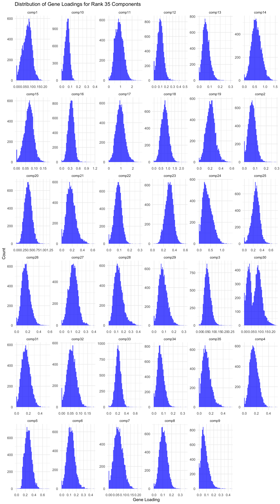
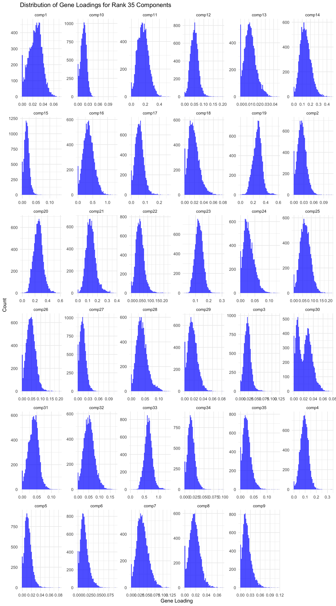
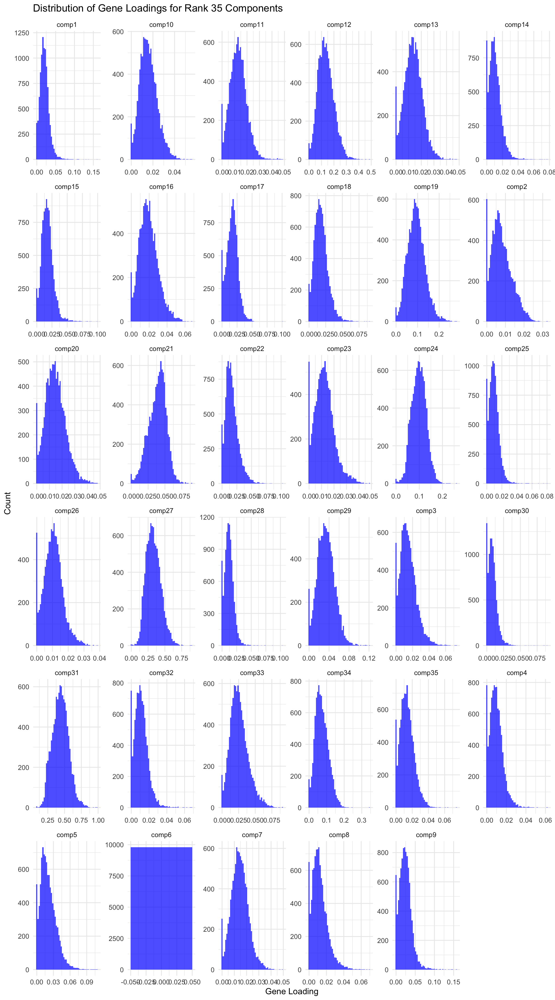
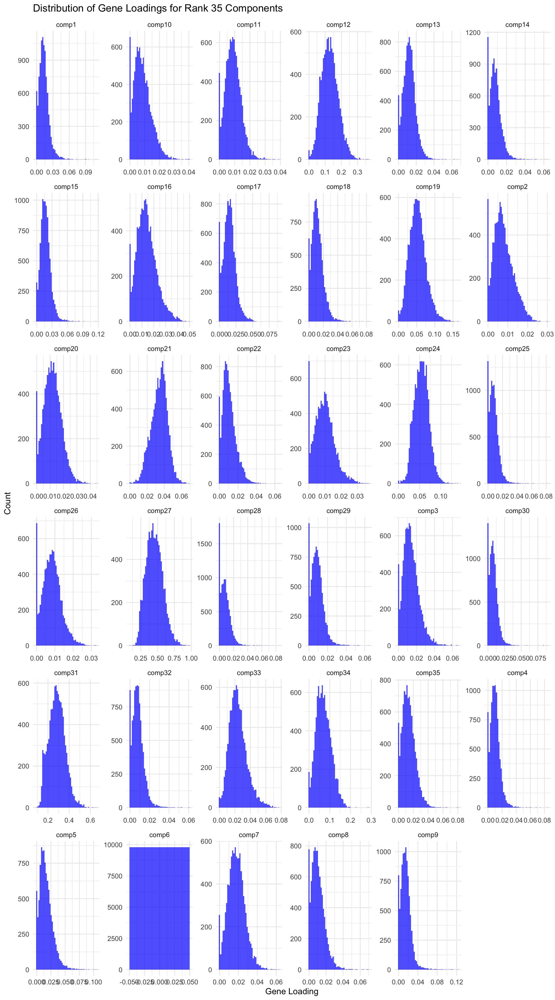

![]()
library(tidyverse)
# ---------------------------------------------------------
# SETTINGS
# ---------------------------------------------------------
base_url <- "https://gannet.fish.washington.edu/v1_web/owlshell/bu-github/timeseries_molecular/M-multi-species/output/41-rank35-optimization"
lambda_vals <- c("1", "2", "4", "6", "8", "10")
# ---------------------------------------------------------
# FUNCTION: read gene_factors.csv AND FIX HEADER
# ---------------------------------------------------------
read_gene_factors <- function(lambda) {
url <- sprintf("%s/lambda_gene_%s/barnacle_factors/gene_factors.csv",
base_url, lambda)
message("Reading: ", url)
df <- read_csv(url, show_col_types = FALSE)
# Fix the shifted header here
# First column should be "gene", others "comp1..compN"
colnames(df) <- c("gene", paste0("comp", 1:(ncol(df)-1)))
df$lambda_gene <- lambda
df
}
# ---------------------------------------------------------
# READ ALL RUNS
# ---------------------------------------------------------
all_factors <- map_df(lambda_vals, read_gene_factors)
# ---------------------------------------------------------
# LONG FORMAT FOR ANALYSIS
# ---------------------------------------------------------
factor_long <- all_factors %>%
pivot_longer(
cols = starts_with("comp"),
names_to = "component",
values_to = "loading"
)More lamda testing
LAMBDAS_GENE="1 2 4 6 8 10"
LAMBDA_SAMPLE=0.1
LAMBDA_TIME=0.05
RANK=35
mkdir -p ../output/41-rank35-optimization
OUTDIR_BASE=../output/41-rank35-optimization
for LG in $LAMBDAS_GENE; do
OUTDIR=${OUTDIR_BASE}/lambda_gene_${LG}
mkdir -p "$OUTDIR"
uv run python ../scripts/14.1-barnacle/build_tensor_and_run.py \
--input-file ../output/14-pca-orthologs/vst_counts_matrix.csv \
--output-dir "$OUTDIR" \
--rank $RANK \
--lambda-gene $LG \
--lambda-sample $LAMBDA_SAMPLE \
--lambda-time $LAMBDA_TIME \
--max-iter 1000 \
--tol 1e-5 \
--seed 92
donesparsity_tbl <- factor_long %>%
group_by(lambda_gene) %>%
summarize(
n_values = n(),
n_zero = sum(loading == 0 | abs(loading) < 1e-12),
sparsity = n_zero / n_values
)
sparsity_tbl # A tibble: 6 × 4
lambda_gene n_values n_zero sparsity
<chr> <int> <int> <dbl>
1 1 343000 3079 0.00898
2 10 343000 25244 0.0736
3 2 343000 3798 0.0111
4 4 343000 7023 0.0205
5 6 343000 16289 0.0475
6 8 343000 21282 0.0620 gene_component_counts <- factor_long %>%
filter(loading > 0) %>%
group_by(lambda_gene, gene) %>%
summarize(
n_components = n_distinct(component),
.groups = "drop"
)multi_component_summary <- gene_component_counts %>%
group_by(lambda_gene, n_components) %>%
summarize(n_genes = n(), .groups = "drop")
multi_component_summary# A tibble: 59 × 3
lambda_gene n_components n_genes
<chr> <int> <int>
1 1 27 2
2 1 28 3
3 1 29 5
4 1 30 17
5 1 31 54
6 1 32 127
7 1 33 402
8 1 34 1526
9 1 35 7664
10 10 24 3
# ℹ 49 more rowssummary_tbl <- sparsity_tbl %>%
left_join(
gene_component_counts %>%
group_by(lambda_gene) %>%
summarize(
mean_components = mean(n_components),
frac_multi = mean(n_components > 1),
.groups = "drop"
),
by = "lambda_gene"
)
summary_tbl# A tibble: 6 × 6
lambda_gene n_values n_zero sparsity mean_components frac_multi
<chr> <int> <int> <dbl> <dbl> <dbl>
1 1 343000 3079 0.00898 34.7 1
2 10 343000 25244 0.0736 32.4 1
3 2 343000 3798 0.0111 34.6 1
4 4 343000 7023 0.0205 34.3 1
5 6 343000 16289 0.0475 33.3 1
6 8 343000 21282 0.0620 32.8 1 # Load data
gene_factors <- read_csv("https://gannet.fish.washington.edu/v1_web/owlshell/bu-github/timeseries_molecular/M-multi-species/output/41-rank35-optimization/lambda_gene_1/barnacle_factors/gene_factors.csv")
#edit so columns names are shifted 1 to the left
colnames(gene_factors) <- c("gene", paste0("comp", 1:(ncol(gene_factors)-1)))
#code to create histogram of gene_factors:
library(ggplot2)
library(tidyr)
# Reshape data to long format
gene_factors_long <- gene_factors %>%
pivot_longer(cols = -1, names_to = "component", values_to = "loading")
# Plot histogram
ggplot(gene_factors_long, aes(x = loading)) +
geom_histogram(bins = 50, fill = "blue", alpha = 0.7) +
facet_wrap(~ component, scales = "free") +
theme_minimal() +
labs(title = "Distribution of Gene Loadings for Rank 35 Components",
x = "Gene Loading",
y = "Count")
# Load data
gene_factors <- read_csv("https://gannet.fish.washington.edu/v1_web/owlshell/bu-github/timeseries_molecular/M-multi-species/output/41-rank35-optimization/lambda_gene_2/barnacle_factors/gene_factors.csv")
#edit so columns names are shifted 1 to the left
colnames(gene_factors) <- c("gene", paste0("comp", 1:(ncol(gene_factors)-1)))
#code to create histogram of gene_factors:
library(ggplot2)
library(tidyr)
# Reshape data to long format
gene_factors_long <- gene_factors %>%
pivot_longer(cols = -1, names_to = "component", values_to = "loading")
# Plot histogram
ggplot(gene_factors_long, aes(x = loading)) +
geom_histogram(bins = 50, fill = "blue", alpha = 0.7) +
facet_wrap(~ component, scales = "free") +
theme_minimal() +
labs(title = "Distribution of Gene Loadings for Rank 35 Components",
x = "Gene Loading",
y = "Count")
# Load data
gene_factors <- read_csv("https://gannet.fish.washington.edu/v1_web/owlshell/bu-github/timeseries_molecular/M-multi-species/output/41-rank35-optimization/lambda_gene_4/barnacle_factors/gene_factors.csv")
#edit so columns names are shifted 1 to the left
colnames(gene_factors) <- c("gene", paste0("comp", 1:(ncol(gene_factors)-1)))
#code to create histogram of gene_factors:
library(ggplot2)
library(tidyr)
# Reshape data to long format
gene_factors_long <- gene_factors %>%
pivot_longer(cols = -1, names_to = "component", values_to = "loading")
# Plot histogram
ggplot(gene_factors_long, aes(x = loading)) +
geom_histogram(bins = 50, fill = "blue", alpha = 0.7) +
facet_wrap(~ component, scales = "free") +
theme_minimal() +
labs(title = "Distribution of Gene Loadings for Rank 35 Components",
x = "Gene Loading",
y = "Count")
# Load data
gene_factors <- read_csv("https://gannet.fish.washington.edu/v1_web/owlshell/bu-github/timeseries_molecular/M-multi-species/output/41-rank35-optimization/lambda_gene_6/barnacle_factors/gene_factors.csv")
#edit so columns names are shifted 1 to the left
colnames(gene_factors) <- c("gene", paste0("comp", 1:(ncol(gene_factors)-1)))
#code to create histogram of gene_factors:
library(ggplot2)
library(tidyr)
# Reshape data to long format
gene_factors_long <- gene_factors %>%
pivot_longer(cols = -1, names_to = "component", values_to = "loading")
# Plot histogram
ggplot(gene_factors_long, aes(x = loading)) +
geom_histogram(bins = 50, fill = "blue", alpha = 0.7) +
facet_wrap(~ component, scales = "free") +
theme_minimal() +
labs(title = "Distribution of Gene Loadings for Rank 35 Components",
x = "Gene Loading",
y = "Count")
# Load data
gene_factors <- read_csv("https://gannet.fish.washington.edu/v1_web/owlshell/bu-github/timeseries_molecular/M-multi-species/output/41-rank35-optimization/lambda_gene_8/barnacle_factors/gene_factors.csv")
#edit so columns names are shifted 1 to the left
colnames(gene_factors) <- c("gene", paste0("comp", 1:(ncol(gene_factors)-1)))
#code to create histogram of gene_factors:
library(ggplot2)
library(tidyr)
# Reshape data to long format
gene_factors_long <- gene_factors %>%
pivot_longer(cols = -1, names_to = "component", values_to = "loading")
# Plot histogram
ggplot(gene_factors_long, aes(x = loading)) +
geom_histogram(bins = 50, fill = "blue", alpha = 0.7) +
facet_wrap(~ component, scales = "free") +
theme_minimal() +
labs(title = "Distribution of Gene Loadings for Rank 35 Components",
x = "Gene Loading",
y = "Count")
# Load data
gene_factors <- read_csv("https://gannet.fish.washington.edu/v1_web/owlshell/bu-github/timeseries_molecular/M-multi-species/output/41-rank35-optimization/lambda_gene_10/barnacle_factors/gene_factors.csv")
#edit so columns names are shifted 1 to the left
colnames(gene_factors) <- c("gene", paste0("comp", 1:(ncol(gene_factors)-1)))
#code to create histogram of gene_factors:
library(ggplot2)
library(tidyr)
# Reshape data to long format
gene_factors_long <- gene_factors %>%
pivot_longer(cols = -1, names_to = "component", values_to = "loading")
# Plot histogram
ggplot(gene_factors_long, aes(x = loading)) +
geom_histogram(bins = 50, fill = "blue", alpha = 0.7) +
facet_wrap(~ component, scales = "free") +
theme_minimal() +
labs(title = "Distribution of Gene Loadings for Rank 35 Components",
x = "Gene Loading",
y = "Count")